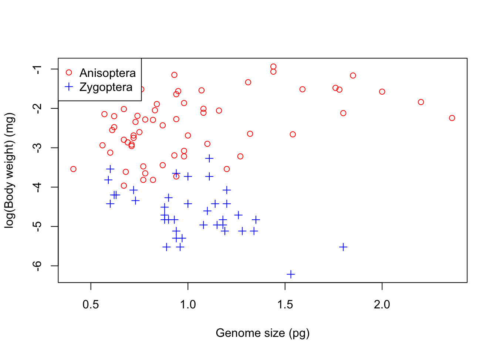
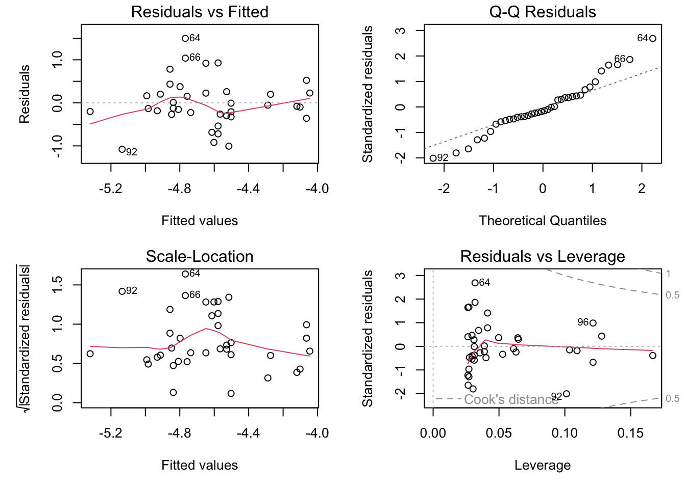

Welcome to the VectorByte 2023 section on Linear Models
This section will cover: * Regression * ANOVA * Multiple Explanatory Variables * Multiple Explanatory Variables with Interactions * Model Simplification
Linear Models: Regression
Introduction
Linear Regression is a class of Linear Models that is frequently a good choice if both, your response (dependent) and your predictor (independent) variables are continuous. In this section you will learn:
To explore your data in order to determine whether a Linear Model is a good choice by
Visualizing your data (in R)
Calculating correlations between variables
To fit a Linear Regression Model to data
To determine whether the Model fits adequately your data (its “significance”) by
Plotting the data and the fitted Model together
Calculating goodness of fit measures and statistics
Using diagnostic plots
It is expected that you have already been introduced to, or are familiar with the concepts (and/or theory) underlying Linear Models. If not, you may want to watch the video.
We will use the genome size data.
So,
\star Open R and setwd to your code directory.
\star Create a new blank script called Regression.R and add some introductory comments.
\star Add code to your script to load the genome size data into R and check it (again, using the relative path prefix `, assuming that you working directory iscode`):
We can use plot to create a scatterplot between two variables. If you have a set of variables to explore, writing code for each plot is tiresome, so R provides a function pairs, which creates a grid of scatter plots between each pair of variables. This will make a plot off all the different combinations in your dataset to better explore the dataset. All it needs is a dataset.
That’s messy! There are too many columns that we are plotting against each other, so its hard to get a meaningful picture (literally). So let’s try color-coding the scatterplot markers by suborder:
pairs(genome, col=genome$Suborder)
The result is still too messy! There are far too many variables in genome for this to be useful. Before we proceed further,
\star Add pairs(genome, col=genome$Suborder) into your script and run the code:
So, we need to cut down the data to fewer variables. Previously (Experimental design section) we used indices to select colours; here, we can use indices to select columns from the data frame. This again uses square brackets (x[]), but a data frame has two dimensions, rows and columns, so you need to provide an index for each dimension, separated by commas. If an index is left blank, then all of that dimension (i.e. all rows or columns) are selected. Try the following to re-acquaint yourself to access data frame content using indices:
# create a small data frame:dat <-data.frame(A =c("a", "b", "c", "d", "e"), B =c(1, 2, 3, 4, 5))dat[1, ] # select row 1 (all columns selected)
A B
1 a 1
dat[, 2] # select column 2 (all rows selected)
[1] 1 2 3 4 5
dat[2, 1] # select row 2, column 1
[1] "b"
Now let’s get resume the actual analysis. We will look at five key variables: genome size, body weight, total length, forewing length and forewing area. If you look at the output of str(genome), you’ll see that these are in columns 4, 7, 8, 12 and 14. We can record the indices of these columns and use this to select the data in the pairs plot:
morpho_vars <-c(4, 7, 8, 12, 14) # store the indicespairs(genome[, morpho_vars], col = genome$Suborder)
\star Add the code above to your script and run it.
In the figure above, each scatterplot is shown twice, with the variables swapping between the x and y axes. You can see immediately that the relationships between the four morphological measurements and genome size are fairly scattered but that the plots comparing morphology show much clearer relationships.
Correlations
One way of summarising how strong the pair-wise relationships between these variables is to calculate a correlation coefficient. Pearson correlations look at the difference of each point from the mean of each variable (and since it uses means, it is a parametric statistic).
It is calculated using the differences from the mean on each axis. The key calculation is — for each point – to get the product of the differences on each axis and add them up. If the points are mostly top left (-x, y) or bottom right (x, -y) then these products are mostly negative (-xy); if the points are mostly top right (x, y) or bottom left (-x, -y) then the products are mostly positive (xy).
Illustration of what the Pearson correlation coefficient means.
The plots above show three clear cases where all the values of xy are negative or positive or where both are present and sum to zero. The Pearson correlation coefficient simply scales these sums of xy to be between -1 (perfectly negatively correlated) and 1 (perfectly positively correlated) via zero (no correlation). Specifically, this correlation coefficient (r) is equal to the average product of the standardized values of the two variables (let’s call them x and y):
x_i, y_i are the individual sample points indexed with i (i = 1,2,\ldots, n)
$ {x} = $ is the the sample mean.
$ s_x = $ (sample standard deviation)
The quantities \left({\frac {x_{i}-{\bar {x}}}{s_{x}}}\right) and \left(\frac{y_i-\bar{y}}{s_y} \right) are the Z-scores (aka standard scores) of x and y. This conversion of the raw scores (x_i’s and y_i’s) to Z-scores is called standardizing (or sometimes, normalizing).
Thus the coefficient (r_{xy}) will be positive (negative) if the x_i and y_i’s tend to move in the same (opposite) direction relative to their respective means (as illustrated in the figure above).
In R, we will use two functions to look at correlations. The first is cor, which can calculate correlations between pairs of variables, so is a good partner for pairs plots. The second is cor.test, which can only compare a single pair of variables, but uses a t test to assess whether the correlation is significant.
\star Try the following (and include it in your R script file):
cor.test(genome$GenomeSize, genome$TotalLength, use ="pairwise")
Pearson's product-moment correlation
data: genome$GenomeSize and genome$TotalLength
t = 3.5507, df = 96, p-value = 0.0005972
alternative hypothesis: true correlation is not equal to 0
95 percent confidence interval:
0.1526035 0.5049895
sample estimates:
cor
0.3407077
The use='pairwise' tells R to omit observations with missing data and use complete pairs of observations. The first function confirms our impressions from the graphs: the correlations between genome size and morphology are positive but comparatively weak and the correlations between morphological measurements are positive and very strong (i.e. close to 1). The correlation test tells us that genome size and body length are positively correlated (r=0.34, t = 3.5507, df = 96, p = 0.0006).
Also, in case you are wondering about what the t-value in the cor.test signifies:
The t-test is used within cor.test to establish if the correlation coefficient is significantly different from zero, that is, to test if there is a significant association between the two variables. The t-test, in general, can be used to test if the mean of a sample is significantly different from some reference value (1-sample t-test). Here, the “mean of the sample” is the observed correlation coefficient, and the reference value is 0 (the null hypothesis, that there is no association).
Transformations and allometric scaling
There is one problem with the correlations above: the correlation coefficient calculation assumes a straight line relationship. Some of the scatterplots above are fairly straight but there are some strongly curved relationships. This is due to allometric scaling, where one body measure changes (or grows) disproportionately with respect to another. Here, two of the variables are in linear units (total and forewing length), one is in squared units (forewing area) and one in cubic units (body weight, which is approximately volume). That these measures are in different units itself guarantees that they will scale allometrically with respect to each other.
The relationships between these variables can be described using a power law:
y = ax^b
Fortunately, if we log transform this equation, we get \log(y) = \log(a) + b \log(x). This is the equation of a straight line (y=a+bx), so we should be able to make these plots straighter by logging both axes. We can create a new logged variable in the data frame like this:
genome$logGS <-log(genome$GenomeSize)
\star Using this command as a template, create a new logged version of the five variables listed above:
The scatterplots show that logging the data has very successfully addressed curvature (non-linearity) due to allometric scaling between variables in the data.
Performing the Regression analysis
We’ll now look at fitting the first linear model of this course, to explore whether log genome size explains log body weight. The first thing to do is to plot the data:
myColours <-c('red', 'blue') # Choose two coloursmySymbols <-c(1,3) # And two different markerscolnames(genome)
plot(logBW ~ GenomeSize , data = genome, #Now plot againcol = myColours[Suborder], pch = mySymbols[Suborder],xlab='Genome size (pg)', ylab='log(Body weight) (mg)')legend("topleft", legend=levels(genome$Suborder), #Add legend at top left cornercol= myColours, pch = mySymbols)

It is clear that the two suborders have very different relationships: to begin with we will look at dragonflies (Anisoptera). We will calculate two linear models:
The Null Model: This is the simplest linear model: nothing is going on and the response variable just has variation around the mean: y = \beta_1. This is written as an R formula as y ~ 1.
The Linear (Regression) Model: This models a straight line relationship between the response variable and a continuous explanatory variable: y= \beta_1 + \beta_{2}x.
The code below fits these two models.
nullModelDragon <-lm(logBW ~1, data = genome, subset = Suborder =="Anisoptera")genomeSizeModelDragon <-lm(logBW ~ logGS, data = genome, subset = Suborder =="Anisoptera")
- Note the long names for the models. Short names are easier to type but calling R objects names like mod1, mod2, xxx swiftly get confusing!*
\star Add these model fitting commands into your script and run them.
Now we want to look at the output of the model. Remember from the lecture that a model has coefficients (the \beta values in the equation of the model) and terms which are the explanatory variables in the model. We’ll look at the coefficients first:
summary(genomeSizeModelDragon)
Call:
lm(formula = logBW ~ logGS, data = genome, subset = Suborder ==
"Anisoptera")
Residuals:
Min 1Q Median 3Q Max
-1.3243 -0.6124 0.0970 0.5194 1.3236
Coefficients:
Estimate Std. Error t value Pr(>|t|)
(Intercept) -2.39947 0.09085 -26.413 < 2e-16 ***
logGS 1.00522 0.23975 4.193 9.54e-05 ***
---
Signif. codes: 0 '***' 0.001 '**' 0.01 '*' 0.05 '.' 0.1 ' ' 1
Residual standard error: 0.6966 on 58 degrees of freedom
(2 observations deleted due to missingness)
Multiple R-squared: 0.2326, Adjusted R-squared: 0.2194
F-statistic: 17.58 on 1 and 58 DF, p-value: 9.539e-05
There is a lot of information there: the model description (‘Call’), a summary of the residuals, a table of coefficients and then information on residual standard error, r squared and an F test.
All of these will become clearer during this course (in particular, the meaning of Adjusted R-square will be explained in the ANOVA section — for the moment, concentrate on the coefficients table.
There are two rows in the coefficient table, one for each coefficient in y=\beta_1 + \beta_2x — these are the intercept and the slope of the line. The rest the details on each row are a t test of whether the slope and intercept are significantly different from zero.
The (least-squares) estimate of the slope coefficient (logGS) is equal to the correlation coefficient between the dependent variable (y, here logBW) and the independent variable (x, here logGS) times the ratio of the (sample) standard deviations of the two (see above for the definitions of these):
\text{Slope} = \beta_2 = r_{xy} \frac{s_y}{s_x}
Thus you can see that the regression slope is proportional to the correlation coefficient; the ratio of standard deviations serves to scale the correlation coefficient (which is unit-less) appropriately to the actual units in which the variables are measured.
The (least-squares) estimate of the intercept is the mean of the dependent variable minus the estimated slope coefficient times the mean of the independent variable:
The standard error of the model (“Residual standard error” in the output above, also referred to as the standard error of the regression) is equal to the square root of the sum of the squared residuals divided by n-2. The sum of squared residuals is divided by n-2 in this calculation rather than n-1 because an additional degree of freedom for error has been used up by estimating two parameters (a slope and an intercept) rather than only one (the mean) in fitting the model to the data.
As you can see in the output above, each of the two model parameters, the slope and intercept, has its own standard error, and quantifies the uncertainty in these two estimates. These can be used to construct the Confidence Intervals around these estimates, which we will learn about later.
The main take-away from all this is that the standard errors of the coefficients are directly proportional to the standard error of the regression and inversely proportional to the square root of the sample size (n). Thus, that “noise” in the data (measured by the residual standard error) affects the errors in the coefficient estimates in exactly the same way. Thus, 4 times as much data will tend to reduce the standard errors of the all coefficients by approximately a factor of 2.
Now we will look at the terms of the model using the anova function. We will have a proper look at ANOVA (Analysis of Variance) later.
Meanwhile, recall from your lecture that ANOVA tests how much variation in the response variable is explained by each explanatory variable. We only have one variable and so there is only one row in the output:
anova(genomeSizeModelDragon)
Analysis of Variance Table
Response: logBW
Df Sum Sq Mean Sq F value Pr(>F)
logGS 1 8.5294 8.5294 17.579 9.539e-05 ***
Residuals 58 28.1417 0.4852
---
Signif. codes: 0 '***' 0.001 '**' 0.01 '*' 0.05 '.' 0.1 ' ' 1
This table is comparing the variation in log body weight explained by log genome size to the total variation in log body weight. We are interested in how much smaller the residuals are for the genome size model than the null model. Graphically, how much shorter are the red residuals than the blue residuals:
Comparison of the null and the regression models.
We can get the sums of the squares of these residuals from the two models using the function resid, and then square them and add them up:
sum(resid(nullModelDragon) ^2)
[1] 36.67107
sum(resid(genomeSizeModelDragon) ^2)
[1] 28.14168
So we have five columns in the ANOVA table:
Df: This shows the degrees of freedom. Each fitted parameter/coefficient takes up a degree of freedom from the total sample size, and the left over are the residuals degree of freedom. In this case, genome size adds a slope (compare the null model y=\beta_1 and this model y=\beta_1 + \beta_2x — there is one more \beta).
Sum Sq: This shows sums of squares. The bottom line is the residual sum of squares for the model and the one above is the variation explained by genome size. Using the two values from above, the sums of square residuals for the null model are 36.67. In the genome size model, the sum of square residuals are 28.14 and so 36.67-28.14=8.53 units of variance have been explained by this model.
Mean Sq: These are just the Sum Sq (Sum of Squares) values divided by the degrees of freedom. The idea behind this is simple: if we explain lots of variation with one coefficient, that is good (the null model), and if we explain a small amount of variation with a loss of degree of freedom (by adding and then estimating more parameters), then that is bad.
F value: This is the ratio of the Mean Sq for the variable and the residual Mean Sq. This is used to test whether the explained variation is large or small.
Pr(>F): This is the p value — the probability of the x-variable (the fitted model) explaining this much variance by chance.
In this case, it is clear that genome size explains a significant variation in body weight.
\star Include the summary and anova commands for genomeSizeModelDragon in your script, run them and check you are happy with the output.
Exercise
Using the above code as a template, create a new model called genomeSizeModelDamsel that fits log body weight as a function of log genome size for damselflies. Write and run code to get the summary and anova tables for this new model. For example, the first step would be:
Now we can plot the data and add lines to show the models. For simple regression models, we can use the function abline(modelName) to add a line based on the model.
\star Create a scatterplot of log body weight as a function of log genome size, picking your favourite colours for the points.
Use abline to add a line for each model and use the col option in the function to colour each line to match the points.
For example: abline(genomeSizeModelDragon, col='red').
Your final figure should look something like this:
Linear regression models fitted to the body weight vs. genome size to the Dragonfly (red) and Damselfly (blue) subsets of the data.
Model diagnostics
Now that we have our models, we need to check that they are appropriate for the data. For this, we will inspect “diagnostic plots”. Producing diagnostic plots is easy in R — if you plot the model object, then R produces a set of diagnostic plots!
\star Quick note on par: this is used to tell R where you want your plots when you build.
\star Try the following code (and include in the R script file):
par(mfrow =c(2, 2), mar =c(5, 5, 1.5, 1.5))plot(genomeSizeModelDragon)
These are the diagnostics for the lm fit to the Dragonfly data subset.
Let’s also plot the diagnostic pots for the model fitted to the Damselfly subset:
par(mfrow =c(2, 2), mar =c(5, 5, 1.5, 1.5))plot(genomeSizeModelDamsel)

The diagnostic plots are:
Residuals vs Fitted: This plot is used to spot if the distribution of the residuals (the vertical distance from a point to the regression line) has similar variance for different predicted values (the y-value on the line corresponding to each x-value). There should be no obvious patterns (such as curves) or big gaps. If there was no scatter, if all the points fell exactly on the line, then all of the dots on this plot would lie on the gray horizontal dashed line. The red line is a smoothed curve to make it easier to see trends in the residuals. It is flat in the Dragonfly model fit above, and a bit more wavy than we would like in the in the Damselfly model fit, but there are no clear trends in either, which is what you hope to see.
Normal Q–Q: This plot is to check whether the residuals are normally distributed — are the values of the observed residuals similar to those expected under a normal distribution? Ideally, the points should form a perfectly straight line, indicating that the observed residuals exactly match the expected. Here, note that the points lie pretty close to the dashed line in both sets of diagnostic Figures above, but deviate at the ends, especially for Damselflies. However, some deviation is to be expected near the ends — here these deviations are just about acceptable.
Scale–Location: The x-axis on this plot is identical to the Residuals vs Fitted plot – these are the fitted values. The y-axis is the square root of the standardized residuals, which are residuals rescaled so that they have a mean of zero and a variance of one. As a result, all y-axis values are positive. Thus large residuals (both positive and negative) plot at the top, and small residuals plot at the bottom (so only their scale is retained). Thus, all of the numbered points (which will be the same in all plots) plot at the top here. The red line here shows the trend, just like the Residuals vs Fitted plot. The regression analysis has assumed homoscedasticity, that the variance in the residuals doesn’t change as a function of the predictor. If that assumption is correct, the red line should be relatively flat. It is not quite as flat as we would like, especially for the Dragonfly analysis.
Residuals vs Leverage: This plot shows the standardized residuals against leverage. “Leverage” is a measure of how much each data point influences the linear model’s coefficient estimates. Because the regression line must pass through the centroid (“pivot point”) of the data, points that lie far from the centroid have greater leverage, and their leverage increases if there are fewer points nearby. Here is an illustration:
Leverage of data points on slope of a regression. The points further away from the centroid in the x-axis direction have more leverage, and can therefore move the regression line up or down (dashed red lines)
There are two key things to note about this plot:
The standardized residuals (y-axis) are centered around zero and reach 2-3 standard deviations away from zero. They should also lie symmetrically about zero, as would be expected for a normal distribution. This is the case for the Damselfly plot , but not so much for the Dragonfly plot.
The contours values show Cook’s distance (only visible in the Damsefly plot), which measures how much the regression would change if a point was deleted. Cook’s distance is increased by leverage and by large residuals: a point far from the centroid with a large residual can severely distort the coefficient estimates from the regression. On this plot, you want to see that the red smoothed line stays close to the horizontal gray dashed line and that no points have a large Cook’s distance (i.e, >0.5). Both are true here.
This is an important diagnostic plot in regression analyses in particular because it tells you whether your estimate of the slope coefficient in particular is strongly affected by certain data points.
Note that certain points are numbered in all the diagnostic plots — these are points to pay special attention to because they are potential outliers. The numbers correspond to the row number for that dataset in your data frame. You can easily identify these points in your data plot because the order of the points along the fitted values axis (y-axis) in the diagnostic plot matches the order along the x-axis in the data plot. So, for example here, in the dragonfly diagnostic plots the two numbered points (46, 10) near the bottom correspond in the data plot to the two red points near the center-left that lie farthest below the red line (see the plot with regression lines fitted to the data).
Thus, neither the Drangonfly nor the Damselfly diagnostic plots look perfect, but this level of deviation from assumptions of linear models is acceptable. The main worrying factors are that the Q-Q plot for Damselflies indicates the observed residuals are a bit more extreme than expected, and the Scale–Location plot for Dragonflies suggests some pattern in the standardized residuals wrt location of the fitted values.
\star Copy the code to create the diagnostic plots into your script to keep a record of the code and run it.
Reporting the model
Now we know that the models are appropriate and we have a plot, the last thing is to report the statistics. For the damselfly model, here is one summary that would do: log genome size explains significant variation in log body weight in dameselflies (F=10.5, df=1,36, p=0.0025) and shows that body weight decreases with genome size (intercept: -4.65, se=0.09; slope: -1.14, se=0.35).
Linear Models: Analysis of variance
Introduction
Analysis of Variance, is very often a good choice if your response (dependent) variable is continuous, and your predictor (independent) variables is categorical.
In this section, you will learn to perform an ANOVA, that is, fit this linear model to the data. Specifically, you will learn to^{[1]}:
Visualize the data by plotting boxplots and barplots
Fit an ANOVA to test whether certain factors can explain (partition) the variation in your data
Perform diagnostics to determine whether the factors are explanatory, and whether the Linear Model is appropriate for your data
Explore and compare how much the different levels of a factor explain the variation in your data
What is ANOVA?
Analysis Of Variance (ANOVA) is an extremely useful class of Linear models. It is very often appropriate when your response (dependent) variable is continuous, while your predictor (independent) variable is categorical. Specifically, One-way ANOVA is used to compare means of two or more samples representing numerical, continuous data in response to a single categorical variable (factor).
A dataset where an ANOVA is appropriate. Performing an ANOVA on this dataset is the same as fitting the linear model y = \beta_1 + \beta_2 x_s + \beta_3 x_a, where x_s and x_a are two levels (“treatments”, representing statistically separate populations) within the factor (games console ownership). Here, the first treatment, the control, is captured by the baseline value \beta_1 (the sample with the lowest value, on the far left).
(One-way) ANOVA tests the null hypothesis that samples from two or more groups (the treatments or factors) are drawn from populations with the same mean value. That is, the null hypothesis is that all the groups are random samples from the same population (no statistical difference in their means). To do this, ANOVA compares the variance in the data explained by fitting the linear model, to the unexplained variance (the null hypothesis.
In other words, in effect, ANOVA asks whether a linear model with a predictor (or explanatory variable) with at least two categorical levels (or factors), better accounts for the variance (Explained Sum of Squares, ESS, see below) than a null model of the form y = \beta_1. Thus, ANOVA is just a type of linear model.
By the end of this section, it will also make more sense to you how/why fitting a linear regression model to the data of the form y = \beta_1 + \beta_2 x (where x is a continuous predictor variable), requires an ANOVA to determine if the model better fits than a null model of the form y = \beta_1.
Typically, one-way ANOVA is used to test for differences among at least three groups, since the two-group (or levels or factors) case can be covered by a t-test. When there are only two means to compare, the t-test and the F-test are equivalent; the relation between ANOVA and t is given by F = t^2.
An extension of one-way ANOVA is two-way analysis of variance that examines the influence of two different categorical independent variables on one dependent variable. We will explore multiple predictors in later segments.
Calculating the ANOVA test statistic
ANOVA uses the F-Statistic. To this end, an ANOVA “partitions” variability in your data as follows:
Total sum of squares (TSS): This is the sum of the squared difference between the observed dependent variable (y) and the mean of the response variable y (denoted by \bar{y}), i.e.,
\text{TSS} = \sum_{i=1}^{n}(y_i - \bar{y})^2
TSS tells us how much variation there is in the dependent variable without having any other information (your null model). You might notice that TSS is the numerator of the sample variance (or it’s square-root, the sample standard deviation).
Explained sum of squares (ESS): Sum of the squared differences between the predicted y’s (denoted \hat{y}’s) and \bar{y}, or, \text{ESS} = \sum_{i=1}^{n} (\hat{y}_i - \bar{y})^2 ESS tells us how much of the variation in the dependent variable our alternative (linear) model was able to explain. That is, it’s the reduction in uncertainty that occurs when the linear model is used to predict the responses.
Residual sum of squares (RSS): Sum of the squared differences between the observed y’s (denoted by y_i) and the predicted \hat{y}, or, \text{RSS} = \sum_{i=1}^{n} (\hat{y}_i - y_i)^2 RSS tells us how much of the variation in the dependent variable our model could not explain. That is, it’s the uncertainty that remains even after the linear model is used. The linear model is considered to be statistically significant if it can account for a large amount of variability in the response.
And of course, TSS = ESS + RSS. That is, the OLS method “decomposes” the total variation in the dependent variable into an explained component (ESS; explained by the predictor) and an unexplained or residual component (the RSS).
The sums of squares used to calculate the statistical significance of the linear model (Regression, ANOVA, etc) through the F value are as follows:
Type of Sum of Squares (SS)
SS Calculation
Degrees of Freedom (DF)
Mean Sum of Squares (MSS)
TSS
\sum_{i=1}^{n}(y_i - \bar{y})^2
n-1
\frac{TSS}{n-1}
ESS
\sum_{i=1}^{n} (\hat{y}_i - \bar{y})^2
n_c-1
\frac{ESS}{n_c-1}
RSS
\sum_{i=1}^{n} (\hat{y}_i - y_i)^2
n-n_c
\frac{RSS}{n-n_c}
Let’s try to make sense of these calculations. Firstly, because we are dealing with samples understanding the degrees of freedom is critical.
Degrees of freedom
Each sum of squares has a corresponding degrees of freedom (DF) associated with it that gives the Mean Sum of Squares (MSS) — the Sums of Squares divided by the corresponding degrees of freedom.
The TSS DF is one less than the number of observations n-1. This is because calculating TSS, needs \bar y , which imposes loss of one degree of freedom. Note that MSS is thus nothing but the sample variance.
The ESS DF is one less than the number of coefficients (n_c) (estimated parameters) in the model: n_c-1. Note that in the case where the linear model is an ANOVA, the number of coefficients equals the number of “treatments” (the categories or levels in the predictor or factor). So for example, in Figure 1, there are three treatments (predictors) and therefore three coefficients (\beta_1, \beta_2, \beta_3), which means that the ESS degrees of freedom there is n_c-1 = 2.
The RSS DF is the sample size n minus the number of coefficients that you need to estimate (n_c), that is, n - n_c, because each estimated coefficient is an unknown parameter.
The F-Value (or Ratio)
The F-Value or F-Ratio, the test statistic used to decide whether the linear model fit is statistically significant, is the ratio of the Mean ESS to the Mean RSS:
F = \frac{\left(\frac{ESS}{n_c-1}\right)}{\left(\frac{RSS}{n-n_c}\right)}
If the null hypothesis that the group means are drawn from sub-populations with the same mean were indeed true, the between-group variance (numerator in this F-ratio) should be lower than the within-group variance (denominator). The null hypothesis is rejected if this F-Ratio is large — the model explains a significant amount of variance, and we can conclude that the samples were drawn from populations with different mean values.
The p-value is calculated for the overall model fit using the F-distribution.
Also note that the Root Mean Square Error (RMSE), also known as the standard error of the estimate, is the square root of the Mean RSS. It is the standard deviation of the data about the Linear model, rather than about the sample mean.
The R^{2}
The R^{2}, also called the Coefficient of Determination, is the proportion of total error (TSS) explained by the model (ESS), so the ratio ESS/TSS. That is it is the proportion of the variability in the response that is explained by the fitted model. Since TSS = ESS + RSS, R^{2} can be rewritten as (TSS-RSS)/TSS = 1 - RSS/TSS. If a model perfectly fits the data, R^{2}=1, and if it has no predictive capability R^{2}=0. In reality, R^{2} will never be exactly 0 because even a null model will explain some variance just by chance due to sampling error. Note that R, the square root of R^2, is the multiple correlation coefficient: the correlation between the observed values (y), and the predicted values (\hat{y}).
Adjusted R^{2}
As additional predictors (and therefore linear model coefficients) are added to a linear model, R^2 increases even when the new predictors add no real predictive capability. The adjusted-R^2 tries to address this problem of over-specification or over-fitting by including the degrees of freedom: Adjusted R^2 = 1 - (RSS/n-n_c-2)/(TSS/n-1) ^{[2]}.
Thus, additional predictors with little explanatory capability will increase the ESS (and reduce the RSS), but they will also have lower RSS degrees of freedom (because of the additional number of fitted coefficients, n_c’s)^{[3]}. Thus if the additional predictors have poor predictive capability, these two reductions will cancel each other out. In other words, the Adjusted R^2 penalizes the addition of new predictors to the linear model, so you should always have a look at the Adjusted R^2 as a corrected measure of R^2.
An example ANOVA
In this section, we will use a dataset from a recent paper on the effects of temperature and larval resource supply on Aedes aegypti life history traits and the vector’s maximal population growth rate (Huxley et al. 2021).
The data
\star Download the file traitdata_Huxleyetal_2021.csv and save to your Data directory.
\star Create a new blank script called ANOVA_Prac.R and add some introductory comments.
\star Use read.csv to load the data in the data frame mozwing and then str and summary to examine the data:
require('tidyverse')
Loading required package: tidyverse
── Attaching core tidyverse packages ──────────────────────── tidyverse 2.0.0 ──
✔ dplyr 1.1.4 ✔ readr 2.1.5
✔ forcats 1.0.0 ✔ stringr 1.5.1
✔ ggplot2 3.5.0 ✔ tibble 3.2.1
✔ lubridate 1.9.3 ✔ tidyr 1.3.1
✔ purrr 1.0.2
── Conflicts ────────────────────────────────────────── tidyverse_conflicts() ──
✖ dplyr::filter() masks stats::filter()
✖ dplyr::lag() masks stats::lag()
ℹ Use the conflicted package (<http://conflicted.r-lib.org/>) to force all conflicts to become errors
require('gplots')
Loading required package: gplots
Attaching package: 'gplots'
The following object is masked from 'package:stats':
lowess
require('repr')rm(list=ls())graphics.off()
mozwing <-read.csv('activities/data/traitdata_Huxleyetal_2021.csv', stringsAsFactors = T)mozwing$temp <-as_factor(mozwing$temp) # define temperature and food level as categoricalmozwing$food_level <-as_factor(mozwing$food_level)
There are 33 variables but only a subset of these are of interest to us here. Let’s summarize the data to explore further:
summary(mozwing)
ID exp_no rep dens rearing_vessel temp
Min. : 1.00 Min. :3 A:87 Min. :0.2 tub:270 22:90
1st Qu.: 9.00 1st Qu.:3 B:87 1st Qu.:0.2 26:90
Median :17.00 Median :3 C:96 Median :0.2 32:90
Mean :16.07 Mean :3 Mean :0.2
3rd Qu.:24.00 3rd Qu.:3 3rd Qu.:0.2
Max. :30.00 Max. :3 Max. :0.2
food_level treatment feeding_interval egg_sub
0.1:135 22_0.1:45 Min. :24 29/03/2019 12:00:153
1 :135 22_1 :45 1st Qu.:24 30/03/2019 12:00:117
26_0.1:45 Median :24
26_1 :45 Mean :24
32_0.1:45 3rd Qu.:24
32_1 :45 Max. :24
l_emerg l_emerg_days_frm_sub l_death
30/03/2019 12:00:153 Min. :1 31/03/2019 12:00: 35
31/03/2019 12:00:117 1st Qu.:1 01/04/2019 12:00: 7
Median :1 15/05/2019 12:00: 6
Mean :1 18/04/2019 12:00: 5
3rd Qu.:1 14/04/2019 12:00: 4
Max. :1 (Other) : 46
NA's :167
l_surv pupal_ref p_emerg l_to_p_devtime
Min. :0.0000 Min. : 1.00 03/04/2019 12:00: 26 Min. : 3.0
1st Qu.:0.0000 1st Qu.: 6.00 04/04/2019 12:00: 22 1st Qu.: 6.0
Median :0.0000 Median :11.00 07/04/2019 12:00: 22 Median : 9.0
Mean :0.3815 Mean :11.65 05/04/2019 12:00: 13 Mean :14.9
3rd Qu.:1.0000 3rd Qu.:17.00 06/04/2019 12:00: 10 3rd Qu.:26.0
Max. :1.0000 Max. :27.00 (Other) : 74 Max. :38.0
NA's :103 NA's :103 NA's :103
l_to_p_devrate p_death p_surv
Min. :0.02632 05/04/2019 12:00: 3 Min. :0.00000
1st Qu.:0.03846 08/04/2019 12:00: 2 1st Qu.:0.00000
Median :0.11111 03/04/2019 12:00: 1 Median :0.00000
Mean :0.11582 06/04/2019 12:00: 1 Mean :0.06587
3rd Qu.:0.16667 07/05/2019 12:00: 1 3rd Qu.:0.00000
Max. :0.33333 (Other) : 3 Max. :1.00000
NA's :103 NA's :259 NA's :103
a_emerg p_to_a_devtime p_to_a_devrate a_death
05/04/2019 12:00: 20 Min. :1.000 Min. :0.2500 07/04/2019 12:00: 11
10/04/2019 12:00: 20 1st Qu.:2.000 1st Qu.:0.3333 12/04/2019 12:00: 11
06/04/2019 12:00: 18 Median :2.000 Median :0.5000 13/04/2019 12:00: 10
07/04/2019 12:00: 10 Mean :2.436 Mean :0.4605 02/05/2019 12:00: 9
09/04/2019 12:00: 10 3rd Qu.:3.000 3rd Qu.:0.5000 08/04/2019 12:00: 8
(Other) : 78 Max. :4.000 Max. :1.0000 (Other) :107
NA's :114 NA's :114 NA's :114 NA's :114
adult_lifespan adult_mort_rate hatch_to_a_devtime hatch_to_adult_devrate
Min. : 1.00 Min. :0.06667 Min. : 5.00 Min. :0.02439
1st Qu.: 4.00 1st Qu.:0.11111 1st Qu.: 8.00 1st Qu.:0.03571
Median : 6.00 Median :0.16667 Median :12.00 Median :0.08333
Mean : 6.59 Mean :0.23194 Mean :17.44 Mean :0.08661
3rd Qu.: 9.00 3rd Qu.:0.25000 3rd Qu.:28.00 3rd Qu.:0.12500
Max. :15.00 Max. :1.00000 Max. :41.00 Max. :0.20000
NA's :114 NA's :114 NA's :114 NA's :114
sex im_surv j_lifetime total_lifespan length_mm
female:156 Min. :0.0000 Min. : 1.00 Min. : 1.00 Min. :2.030
NA's :114 1st Qu.:0.0000 1st Qu.: 6.00 1st Qu.: 8.00 1st Qu.:2.510
Median :0.0000 Median :12.00 Median :18.00 Median :2.730
Mean :0.4222 Mean :15.97 Mean :19.78 Mean :2.742
3rd Qu.:1.0000 3rd Qu.:27.00 3rd Qu.:30.00 3rd Qu.:3.020
Max. :1.0000 Max. :47.00 Max. :49.00 Max. :3.270
NA's :121
You will see from the output of summary that there are data on several vector traits, such as juvenile development, adult longevity and wing length.
Exploring the data with boxplots
The body size of arthropod vectors is expected to have an important effect on vector-borne disease transmission risk, because it is associated with traits, such as longevity and biting rate. In organisms with complex life histories, including mosquitoes, adult size is strongly affected by larval rearing conditions.
Here, we are interested in finding out whether wing length varies predictably across temperatures (a typical one-way ANOVA question).
Before we fit any models, we want to plot the data to see if the means within these groupings look different. We also want to check whether the variance looks similar for each group: constant normal variance! A simple way is to look at box and whisker plots, showing the median and range of the data:
\star Generate a boxplot of the differences in wing length between temperatures:
plot(length_mm ~ temp, mozwing)
Looking at the plots, it is clear that there is more spread in the data below the median than above. Create a new variable logwinglength in the mozwing data frame containing logged millimeter values.
\star Now create a boxplot of log wing length values within temperatures:
mozwing$loglength <-log(mozwing$length_mm)
### Differences in means with barplots
Box and whisker plots show the median and spread in the data very clearly, but we want to test whether the means are different. This is t test territory — how different are the means given the standard error — so it is common to use barplots and standard error bars to show these differences.
We’re going to use some R code to construct a barplot by hand. We need to calculate the means and standard errors within temperature groups, but before we can do that, we need a new functions to calculate the standard error of a mean:
seMean <-function(x){ # get standard error of the mean from a set of values (x) x <-na.omit(x) # get rid of missing values se <-sqrt(var(x)/length(x)) # calculate the standard errorreturn(se) # tell the function to return the standard error}
Now we can use the function tapply: it splits a variable up into groups from a factor and calculates statistics on each group using a function.
lengthMeans <-tapply(mozwing$loglength, mozwing$temp, FUN = mean, na.rm =TRUE)print(lengthMeans)
22 26 32
1.0737861 0.9824950 0.9131609
And similarly, let’s calculate the standard error of the mean using the function we made:
lengthSE <-tapply(mozwing$loglength, mozwing$temp, FUN = seMean)print(lengthSE)
22 26 32
0.01330309 0.01431165 0.01230405
Now we have to put these values together on the plot:
# get the upper and lower limits of the error barsupperSE <- lengthMeans + lengthSElowerSE <- lengthMeans - lengthSE# get a barplot# - this function can report where the middle of the bars are on the x-axis# - set the y axis limits to contain the error barsbarMids <-barplot(lengthMeans, ylim=c(0, max(upperSE)), ylab ='ln(wing length, mm)')# Now use the function to add error bars# - draws arrows between the points (x0,y0) and (x1,y1)# - arrow heads at each end (code=3) and at 90 degree anglesarrows(barMids, upperSE, barMids, lowerSE, ang=90, code=3)
Now we need to draw all these pieces together into a script and get used to using them.
\star Add all the lines of code from this section into your script. Run it and check you get the graph above.
\star Use the second two chunks as a model to plot a similar graph for food level
seMeanfood <-function(x){ # get standard error of the mean from a set of values (x) x <-na.omit(x) # get rid of missing values se <-sqrt(var(x)/length(x)) # calculate the standard errorreturn(se) # tell the function to return the standard error}
lengthMeansfood <-tapply(mozwing$loglength, mozwing$food_level, FUN = mean, na.rm =TRUE)print(lengthMeansfood)
0.1 1
0.9111556 1.0670992
lengthSEfood <-tapply(mozwing$loglength, mozwing$food_level, FUN = seMeanfood)print(lengthSEfood)
0.1 1
0.011887620 0.008825873
Lets get the upper and lower limits of the error bars:
Now we should build a barplot - this function can report where the middle of the bars are on the x-axis - set the y axis limits to contain the error bars
Now use the function to add error bars - draws arrows between the points (x0,y0) and (x1,y1) - arrow heads at each end (code=3) and at 90 degree angles
That is a lot of work to go through for a plot. Doing it the hard way uses some useful tricks, but one strength of R is that there is a huge list of add-on packages that you can use to get new functions that other people have written.
We will use the gplots package to create plots of group means and confidence intervals. Rather than plotting the means \pm 1 standard error, the option p=0.95 uses the standard error and the number of data points to get 95% confidence intervals. The default connect=TRUE option adds a line connecting the means, which isn’t useful here.
\star Replicate the code below into your script and run it to get the plots below.
#Load the gplots packagelibrary(gplots)# Get plots of group means and standard errorspar(mfrow=c(1,2))plotmeans(loglength ~ temp, data=mozwing, p=0.95, connect=FALSE)plotmeans(loglength ~ food_level, data=mozwing, p=0.95, connect=FALSE)
Analysis of variance
Hopefully, those plots should convince you that there are differences in wing length across temperatures and food levels. We’ll now use a linear model to test whether those differences are significant.
\star Using your code from the regression section as a guide, create a linear model called lengthLM which models wing length as a function of temperature.
Use anova and summary to look at the analysis of variance table and then the coefficients of the model.
The ANOVA table for the model should look like the one below: temperature explains highly significant variation in wing length(F= 30.5, \textrm{df}=2 \textrm{ and } 146, p =8.45e-12)
lengthLM <-lm(loglength ~ temp, data=mozwing)
anova(lengthLM)
Analysis of Variance Table
Response: loglength
Df Sum Sq Mean Sq F value Pr(>F)
temp 2 0.58891 0.294454 30.517 8.446e-12 ***
Residuals 146 1.40873 0.009649
---
Signif. codes: 0 '***' 0.001 '**' 0.01 '*' 0.05 '.' 0.1 ' ' 1
Note the style of reporting the result - the statistic (F), degrees of freedom and p value are all provided in support.
Pay close attention to the sum of squares column. This model is good, but some will not be. The important ratio is called r^2, a measure of explanatory power, and shows that, although a model can be very significant, it might not be very explanatory. We care about explanatory power or effect size, *not*p values.
The coefficients table for the model looks like this:
summary(lengthLM)
Call:
lm(formula = loglength ~ temp, data = mozwing)
Residuals:
Min 1Q Median 3Q Max
-0.27446 -0.06218 0.02685 0.07266 0.14568
Coefficients:
Estimate Std. Error t value Pr(>|t|)
(Intercept) 1.07379 0.01290 83.252 < 2e-16 ***
temp26 -0.09129 0.01832 -4.983 1.75e-06 ***
temp32 -0.16063 0.02122 -7.571 3.87e-12 ***
---
Signif. codes: 0 '***' 0.001 '**' 0.01 '*' 0.05 '.' 0.1 ' ' 1
Residual standard error: 0.09823 on 146 degrees of freedom
(121 observations deleted due to missingness)
Multiple R-squared: 0.2948, Adjusted R-squared: 0.2851
F-statistic: 30.52 on 2 and 146 DF, p-value: 8.446e-12
It shows the following:
The reference level (or intercept) is for 22^\circC. The summary output indicates that wing length at this temperature is significantly different from zero - this is not an exciting finding!
The differences between the three possible pairs and then the lower and upper bounds of the 95% confidence interval for the difference and a p value.
In each case, we want to know if the difference could be zero: does the 95% confidence interval for each pair include zero?
For all pairs, the confidence intervals do not include zero, so they are significantly different. For example, comparison between 32 and 22^\circC, the interval does include zero (difference = -0.16, 95% CI’s limits are -0.21 & -0.11), so these groups are significantly different.
The p values for the top pairs are broadly consistent with the summary table. However, it may be harder to find significant results with a Tukey test in other cases.
You can visualise these confidence intervals by plotting the Tukey test. You have to tweak the graphics parameters to get a clean plot though.
par(mfrow=c(1,1))par(las=1, mar=c(5,5,5,5))# las= 1 turns labels horizontal# mar makes the left margin wider (bottom, left, top, right)plot(TukeyLength)
\star Include the Tukey test in your script for both the temperature and food models.
Are the factors independent?
We’ve looked at two models, using temperature and food level. It is worth asking whether these are independent factors? This is important to know because otherwise, a two-way ANOVA would not be appropriate. We will look at interactions later.
OK, so we want to know whether the two factors are independent. This is a job for the \chi^2 test!
The Chi-square test and count data
The Chi-square test, also known as \chi^{2} test or chi-square test, is designed for scenarios where you want to statistically test how likely it is that an observed distribution of values is due to chance. It is also called a “goodness of fit” statistic, because it measures how well the observed distribution of data fits with the distribution that is expected if the variables of which measurements are made are independent. In our wing length example below, the two variables are temperature and food level.
Note that a \chi^{2} test is designed to analyze categorical data. That is the data have been counted (count data) and divided into categories. It is not meant for continuous data (such as body weight, genome size, or height). For example, if you want to test whether attending class influences how students perform on an exam, using test scores (from 0-100) as data would not be appropriate for a Chi-square test. However, arranging students into the categories “Pass” and “Fail” and counting up how many fall in each categories would be appropriate. Additionally, the data in a Chi-square table (see below) should not be in the form of percentages – only count data are allowed!
The Chi-square test with the wing length data
We can easily build a table for a Chi-square test on the wing length data as follows:
mozwing <- mozwing[!is.na(mozwing$loglength),] # subset data to omit cells for individuals that did not survive to adulthoodfactorTable <-table(mozwing$food_level,mozwing$temp)print(factorTable)
across all the cells/categories in the table (so the sum would be over 6 categories in our current wing length example).
“Observed” is the observed proportion of data that fall in a certain category. For example, at 22°C there are 23 individuals observed in the food level, 0.1 category, and 35 in the food level, 1 category.
“Expected” is what count would be expected if the values in each category were truly independent. Each cell has its own expected value, which is simply calculated as the count one would expect in each category if the value were generated in proportion to the total number seen in that category. So in our example, the expected value for the food level, 0.1 category would be
The sum of all six (one for each cell in the table above) such calculations would be the \chi^{2} value that R gave you through the chisq.test() above — try it!
Now back to the R output from the chisq.test() above. Why df = 2? This is calculated as DF = (r - 1) * (c - 1) where r and c are the number of rows and columns in the \chi^{2} table, respectively. The same principle you learned before applies here; you lose one degree of freedom for each new level of information you need to estimate: there is uncertainity about the information (number of categories) in both rows and columns, so you need to lose one degree of freedom for each.
Finally, note that the p-value is non-significant — we can conclude that the factors are independent. This is expected because individuals could only be exposed to one of the six temperature-food treatments in the study’s experimental design. This dataset only contains females, however, the chisq.test() would be even more useful if the dataset contained values on both sexes. Later, we analyse these data using “interactions” later in multiple explanatory variables.
\star Include and run the \chi^2 test in your script.
Saving data
The last thing to do is to save a copy of the wing length data, including our new column of log data.
\star Use this code in your script to create the saved data in your Data directory :
save(mozwing, file='mozwing.Rdata')
Linear Models: Multiple explanatory variables
Introduction
In this section we will explore fitting a linear model to data when you have multiple explanatory (predictor) variables.
Look back at the end of the previous section to see how you saved the RData file. If loglength is missing, just add it to the imported data frame again (go back to the ANOVA section and have a look if you have forgotten how). Also, check to see if temp and food_level are defined as factors.
Use ls(), and then str to check that the data has loaded correctly:
In the regression section, we asked if temperature and food level had meaningful effects on wing length. Now we want to ask questions like: How is the size-temperature relationship affected by different food levels?
We need to look at plots within groups.
Before we do that, there is a lot of data in the data frame that we don’t need for our analysis and we should make sure that we are using the same data for our plots and models. We will subset the data down to the complete data for the three variables and log the length of the wings:
Remember that lattice, like base R, will automatically plot boxplots when the explanatory variables of interest are defined as factors.
Boxplots within groups
In the regression section, we used the subset option to fit a model just to dragonflies. You can use subset with plots too.
\star Add par(mfrow=c(1,2)) to your script to split the graphics into two panels.
\star Copy over and modify the code from the ANOVA section to create a boxplot of genome size by trophic level into your script.
\star Now further modify the code to generate the plots shown in the figure below (you will have to subset your data for this, and also use the subset option of the plot command).
You can use the `plot` function's option `main = ` to add titles to a plot.
lattice again
Recall that the lattice package provides some very neat extra ways to plot data in groups. They look pretty but the downside is that they don’t use the same graphics system — all those par commands are useless for these graphs. The defaults look good though!
The code loglength ~ temp | food_level means plot the relationship between wing length and temperature, but group within levels of food supply. We are using the function bwplot, which is provided by lattice to create box and whisker plots.
\star Create the lattice plots above from within your script.
Rearrange this code to have three plots, showing the box and whisker plots for food_level, grouped within the levels of temp.
Try reshaping the R plot window and running the command again. Lattice tries to make good use of the available space when creating lattice plots.
Barplots again
We’re going to make the barplot code from the regression section even more complicated! This time we want to know the mean log wing length within combinations of temp and food_level. We can still use tapply, providing more than one grouping factor. We create a set of grouping factors like this:
groups <-list(wings$temp, wings$food_level)groupMeans <-tapply(wings$loglength, groups, FUN = mean)print(groupMeans)
Use this code and the script from the ANOVA section to get the set of standard errors for the groups groupSE:
seMean <-function(x){# get rid of missing values x <-na.omit(x)# calculate the standard error se <-sqrt(var(x)/length(x))# tell the function to report the standard errorreturn(se)}
groups <-list(wings$food_level, wings$temp)groupMeans <-tapply(wings$loglength, groups, FUN=mean)print(groupMeans)
Now we can use barplot. The default option for a barplot of a table is to create a stacked barplot, which is not what we want. The option beside=TRUE makes the bars for each column appear side by side.
Once again, we save the midpoints of the bars to add the error bars. The other options in the code below change the colours of the bars and the length of error bar caps.
\star Generate the barplot above and then edit your script to change the colours and error bar lengths to your taste.
Plotting means and confidence intervals
We’ll use the plotmeans function again as an exercise to change graph settings and to prepare figures for reports and write ups. This is the figure you should be able to reproduce the figure below.
Replace image
Means and 95% confidence intervals for logged wing length (mm) in Aedes aegypti for (a) different temperature levels and (b) for different larval food levels
\star Use plotmeans from the ANOVA section and the subset option to generate the two plots below. You will need to set the ylim option for the two plots to make them use the same y axis.
\star Use text to add labels — the command par('usr') will show you the limits of the plot (x_{min}, x_{max}, y_{min}, y_{max}) and help pick a location for the labels.
\star Change the par settings in your code and redraw the plots to try and make better use of the space. In the example below, the box shows the edges of the R graphics window.
Note the following about the the figure above (generated using plotmeans)):
White space: The default options in R use wide margins and spaced out axes and take up a lot of space that could be used for plotting data. You’ve already seen the par function and the options mfrow for multiple plots and mar to adjust margin size. The option mgp adjusts the placement of the axis label, tick labels and tick locations. See ?par for help on the these options.
Main titles: Adding large titles to graphs is also a bad idea — it uses lots of space to explain something that should be in the figure legend. With multiple plots in a figure, you have to label graphs so that the figure legend can refer to them. You can add labels using text(x,y,'label').
Figure legends: A figure caption and legend should give a clear stand-alone description of the whole figure.
Referring to figures: You must link from your text to your figures — a reader has to know which figures refer to which results. So: “There are clear differences in mean genome size between species at different trophic levels and between ground dwelling and other species, Figure xx”.
Fitting the linear model
All those exploratory visualizations suggest:
Body size in Aedes aegytpi decreases with temperature, which is consistent with the size-temperature rule for many ectotherms.
Body size in Aedes aegytpi increases with larval food supply
We suspected these things from the ANOVA section analyses, but now we can see that they might have separate effects. We’ll fit a linear model to explore this and add the two explanatory variables together.
\star This is an important section — read it through carefully and ask questions if you are unsure. Copy the code into your script and add comments. Do not just jump to the next action item!
\star First, fit the model:
model <-lm(loglength ~ temp + food_level, data = mozwing)
We’re going to do things right this time and check the model diagnostics before we rush into interpretation.
Examine these diagnostic plots. There are six predicted values now - three temperature levels for each of the two food levels. Those plots look ok so now we can look at the analysis of variance table:
anova(model)
Analysis of Variance Table
Response: loglength
Df Sum Sq Mean Sq F value Pr(>F)
temp 2 0.58891 0.29445 96.404 < 2.2e-16 ***
food_level 1 0.96584 0.96584 316.215 < 2.2e-16 ***
Residuals 145 0.44288 0.00305
---
Signif. codes: 0 '***' 0.001 '**' 0.01 '*' 0.05 '.' 0.1 ' ' 1
Ignore thep values! Yes, they’re highly significant but we want to understand the model, not rubber stamp it with ‘significant’.
The sums of squares for the variables are both large compared to the residual sums of squares — there is lots of explained variation! We can calculate the r^2 as explained sums of squares over total sums of squares:
Food level explain more variation than temperature — this makes intuitive sense from the plots since there are big differences between in the figure we generated above (using plotmeans) (a vs b), but smaller differences within.
We could also calculate a significance for the whole model by merging the terms. The total explained sums of squares of 0.59 + 0.97 = 1.56 uses 2+1 =3 degrees of freedom, so the mean sums of squares for all the terms together is 1.56/3=0.52. Dividing this by the residual mean square of 0.003 gives an F of 0.52 / 0.003 = 173.33.
Now we can look at the summary table to see the coefficients:
summary(model)
Call:
lm(formula = loglength ~ temp + food_level, data = mozwing)
Residuals:
Min 1Q Median 3Q Max
-0.193070 -0.024347 0.004734 0.032994 0.121469
Coefficients:
Estimate Std. Error t value Pr(>|t|)
(Intercept) 0.973804 0.009180 106.078 < 2e-16 ***
temp26 -0.072698 0.010361 -7.017 8.05e-11 ***
temp32 -0.177597 0.011975 -14.830 < 2e-16 ***
food_level1 0.165684 0.009317 17.782 < 2e-16 ***
---
Signif. codes: 0 '***' 0.001 '**' 0.01 '*' 0.05 '.' 0.1 ' ' 1
Residual standard error: 0.05527 on 145 degrees of freedom
Multiple R-squared: 0.7783, Adjusted R-squared: 0.7737
F-statistic: 169.7 on 3 and 145 DF, p-value: < 2.2e-16
Starting at the bottom of this output, summary has again calculated r^2 for us and also an F statistic for the whole model, which matches the calculation above.
The other important bits are the four coefficients. The intercept is now the reference level for two variables: it is the mean for individuals that were reared at 22°C with low food supply (0.1 mg day^-1). We then have differences from this value for individuals reared at the other temperatures. There is a big change in wing length associated with increased temperature and food level and both of these have large effects sizes. Increasing temperature from 22°C to 32°C introduced about a 20% difference in wing length. Increased food at 22°C increased wing by ~20%.
Because the difference is large and the standard error is small, the t value suggests that this difference did not arise just by chance. Put another way, it is significant.
The table below shows how these four coefficients combine to give the predicted values for each of the group means.
22°C
26°C
32°C
low food
0.98 = 0.98
0.98 - 0.07 = 0.91
0.98 - 0.18 = 0.70
high food
0.98 + 0.17 = 1.15
0.98 - 0.07 + 0.17 =1.08
0.98 - 0.18 + 0.17 = 0.97
Linear Models: Multiple variables with interactions
Introduction
Here you will build on your skills in fitting linear models with multiple explanatory variables to data. You will learn about another commonly used Linear Model fitting technique: ANCOVA.
We will build two models in this section:
Model 1: Is Ae. aegypti wing length predicted by interactions between temperature and food level?
ANCOVA: Is body size in Odonata predicted by interactions between genome size and taxonomic suborder?
So far, we have only looked at the independent effects of variables. For example, in the temperature and food level model from the first multiple explanatory variables section, we only looked for specific differences for being exposed to low larval food supply or high larval food supply, not for being specifically reared at a specific temperature-food level treatment. These independent effects of a variable are known as main effects and the effects of combinations of variables acting together are known as interactions — they describe how the variables interact.
Creating more complex Linear Models with multiple explanatory variables
Including the effects of interactions between multiple variables in a linear model
Plotting predictions from more complex (multiple explanatory variables) linear models
Formulae with interactions in R
We’ve already seen a number of different model formulae in R. They all use this syntax:
response variable ~ explanatory variable(s)
But we are now going to see two extra pieces of syntax:
y ~ a + b + a:b: The a:b means the interaction between a and b — do combinations of these variables lead to different outcomes?
y ~ a * b: This a shorthand for the model above. The means fit a and b as main effects and their interaction a:b.
Model 1: Aedes aegypti wing length
\star Make sure you have changed the working directory to Code in your stats coursework directory.
\star Create a new blank script called ‘Interactions.R’ and add some introductory comments.
\star Read in the data:
For practice, subset the dataset, define any categorical variables, and add any columns that might missing. Revist the previous sections, if you have forgotten what is needed!
Let’s refit the model from the earlier multiple explanatory variable section, but including the interaction between temperature and food level. We’ll immediately check the model is appropriate:
Compared to the model from the first multiple explanatory variables section, there is an extra line at the bottom. The top two are the same and show that temperature and food level both have independent main effects. The extra line shows that there is also an interaction between the two. It doesn’t explain very much variation, and it is non-significant.
The model from the first multiple explanatory variables section without the interaction had an r^2 = 0.78 — our new model explains 0% more of the variation in the data.
The summary table is as follows:
summary(model)
Call:
lm(formula = loglength ~ temp * food_level, data = wings)
Residuals:
Min 1Q Median 3Q Max
-0.18571 -0.02245 0.00357 0.03279 0.12510
Coefficients:
Estimate Std. Error t value Pr(>|t|)
(Intercept) 0.97203 0.01144 84.971 < 2e-16 ***
temp26 -0.07828 0.01532 -5.110 1.01e-06 ***
temp32 -0.15041 0.02078 -7.238 2.57e-11 ***
food_level1 0.16862 0.01473 11.450 < 2e-16 ***
temp26:food_level1 0.01204 0.02069 0.582 0.561
temp32:food_level1 -0.03895 0.02536 -1.536 0.127
---
Signif. codes: 0 '***' 0.001 '**' 0.01 '*' 0.05 '.' 0.1 ' ' 1
Residual standard error: 0.05486 on 143 degrees of freedom
Multiple R-squared: 0.7845, Adjusted R-squared: 0.777
F-statistic: 104.1 on 5 and 143 DF, p-value: < 2.2e-16
The lines in this output are:
The reference level (intercept) for low-food at 22°C. (The reference level is decided just by alphabetic/numeric order of the levels)
Two differences for being in different food levels.
One difference for being high-food at 22°C.
Two new differences that give specific differences for high-food at 26 and 32°C.
The first four lines, as in the model from the ANOVA section, which would allow us to find the predicted values for each group if the size of the differences did not vary between levels because of the interactions. That is, this part of the model only includes a single difference low-food and high-food, which has to be the same for each temperature because it ignores interactions between temperature and low- / high-food identity of each treatment. The last two lines then give the estimated coefficients associated with the interaction terms, and allow cause the size of differences to vary between levels because of the further effects of interactions.
The table below show how these combine to give the predictions for each group combination, with those two new lines show in red:
low food
high food
22°C
0.97 = 0.97
0.97 + 0.17 = 1.14
26°C
0.97 - 0.08 = 0.89
0.97 - 0.08 + 0.17+ 0.01 = 1.07
32°C
0.97 - 0.15 = 0.82
0.97 - 0.15 + 0.17- 0.04 = 0.95
So why are there two new coefficients? For interactions between two factors, there are always (n-1)\times(m-1) new coefficients, where n and m are the number of levels in the two factors (low- or high-food: 2 levels and temperature: 3 levels, in our current example). So in this model, (3-1) \times (2-1) =2. It might be easier to understand why graphically:
The prediction for the white boxes above can be found by adding the main effects together but for the grey boxes, we need to find specific differences. So there are (n-1)\times(m-1) interaction coefficients (count the number of grey boxes) to add.
If we put this together, what is the model telling us?
The interaction model does’t tell us anything more than the model without interactions – body size in Ae. aegypti decreases with temperature and increases with food level.
This finding suggests that food limitation can exacerbate the negative effect that increased temperature has on body size. However, the interaction term in the anova output suggests that variation between food levels in degree to which body size decreases with temperature is non-significant.
\star Copy the code above into your script and run the model.
Make sure you understand the output!
Just to make sure the sums above are correct, we’ll use the same code as in earlier multiple explanatory variables section to get R to calculate predictions for us, similar to the way we did before:
Again, remember that the each = 2 option repeats each value twice in succession; the times = 3 options repeats the whole set of values (the whole vector) three times.
\star Include and run the code for gererating these predictions in your script.
If we plot these data points onto the barplot from the first multiple explanatory variables section, they now lie exactly on the mean values, because we’ve allowed for interactions. How much overlap would you expect, if you were to plot the predictions from the model without the interaction term?
Model 2 (ANCOVA): Body Weight in Odonata
We’ll go all the way back to the regression analyses from the Regression section. Remember that we fitted two separate regression lines to the data for damselflies and dragonflies. We’ll now use an interaction to fit these in a single model. This kind of linear model — with a mixture of continuous variables and factors — is often called an analysis of covariance, or ANCOVA. That is, ANCOVA is a type of linear model that blends ANOVA and regression. ANCOVA evaluates whether population means of a dependent variable are equal across levels of a categorical independent variable, while statistically controlling for the effects of other continuous variables that are not of primary interest, known as covariates.
Thus, ANCOVA is a linear model with one categorical and one or more continuous predictors.
There is no significant main effect of log genome size. The main effect is the important thing here — genome size is hugely important but does very different things for the two different suborders. If we ignored Suborder, there isn’t an overall relationship: the average of those two lines is pretty much flat.
There is a very strong main effect of Suborder: the mean body weight in the two groups are very different.
There is a strong interaction between suborder and genome size. This is an interaction between a factor and a continuous variable and shows that the slopes are different for the different factor levels.
Now for the summary table:
summary(odonModel)
Call:
lm(formula = logBW ~ logGS * Suborder, data = odonata)
Residuals:
Min 1Q Median 3Q Max
-1.3243 -0.3225 0.0073 0.3962 1.4976
Coefficients:
Estimate Std. Error t value Pr(>|t|)
(Intercept) -2.39947 0.08475 -28.311 < 2e-16 ***
logGS 1.00522 0.22367 4.494 1.99e-05 ***
SuborderZygoptera -2.24895 0.13540 -16.610 < 2e-16 ***
logGS:SuborderZygoptera -2.14919 0.46186 -4.653 1.07e-05 ***
---
Signif. codes: 0 '***' 0.001 '**' 0.01 '*' 0.05 '.' 0.1 ' ' 1
Residual standard error: 0.6499 on 94 degrees of freedom
(2 observations deleted due to missingness)
Multiple R-squared: 0.7549, Adjusted R-squared: 0.7471
F-statistic: 96.5 on 3 and 94 DF, p-value: < 2.2e-16
- The first thing to note is that the r^2 value is really high. The model explains three quarters (0.752) of the variation in the data.
Next, there are four coefficients:
The intercept is for the first level of Suborder, which is Anisoptera (dragonflies).
The next line, for log genome size, is the slope for Anisoptera.
We then have a coefficient for the second level of Suborder, which is Zygoptera (damselflies). As with the first model, this difference in factor levels is a difference in mean values and shows the difference in the intercept for Zygoptera.
The last line is the interaction between Suborder and logGS. This shows how the slope for Zygoptera differs from the slope for Anisoptera.
How do these hang together to give the two lines shown in the model? We can calculate these by hand:
\star Add the above code into your script and check that you understand the outputs.
We’ll use the predict function again to get the predicted values from the model and add lines to the plot above.
First, we’ll create a set of numbers spanning the range of genome size:
#get the range of the data:rng <-range(odonata$logGS)#get a sequence from the min to the max with 100 equally spaced values:LogGSForFitting <-seq(rng[1], rng[2], length =100)
We can now use the model to predict the values of body weight at each of those points for each of the two suborders:
#get a data frame of new data for the orderZygoVals <-data.frame(logGS = LogGSForFitting, Suborder ="Zygoptera")#get the predictions and standard errorZygoPred <-predict(odonModel, newdata = ZygoVals, se.fit =TRUE)#repeat for anisopteraAnisoVals <-data.frame(logGS = LogGSForFitting, Suborder ="Anisoptera")AnisoPred <-predict(odonModel, newdata = AnisoVals, se.fit =TRUE)
We’ve added se.fit=TRUE to the function to get the standard error around the regression lines. Both AnisoPred and ZygoPred contain predicted values (called fit) and standard error values (called se.fit) for each of the values in our generated values in LogGSForFitting for each of the two suborders.
We can add the predictions onto a plot like this:
# plot the scatterplot of the data
odonata$Suborder <-as.factor(odonata$Suborder)plot(logBW ~ logGS, data = odonata, col = Suborder)# add the predicted lineslines(AnisoPred$fit ~ LogGSForFitting, col ="black")lines(AnisoPred$fit + AnisoPred$se.fit ~ LogGSForFitting, col ="black", lty =2)lines(AnisoPred$fit - AnisoPred$se.fit ~ LogGSForFitting, col ="black", lty =2)
\star Copy the prediction code into your script and run the plot above.
Copy and modify the last three lines to add the lines for the Zygoptera. Your final plot should look like this:
Model simplification
Introduction
In biology, we often use statistics to compare competing hypotheses in order to work out the simplest explanation for some data. This often involves collecting several explanatory variables that describe different hypotheses and then fitting them together in a single model, and often including interactions between those variables.
In all likelihood, not all of these model terms will be important. If we remove unimportant terms, then the explanatory power of the model will get worse, but might not get significantly worse.
“It can scarcely be denied that the supreme goal of all theory is to make the irreducible basic elements as simple and as few as possible without having to surrender the adequate representation of a single datum of experience.”
– Albert Einstein
Or to paraphrase:
“Everything should be made as simple as possible, but no simpler.”
The approach we will look at is to start with a maximal model — the model that contains everything that might be important — and simplify it towards the null model — the model that says that none of your variables are important. Hopefully, there is a point somewhere in between where you can’t remove any further terms without making the model significantly worse: this is called the minimum adequate model.
Section aims
The main aim of this section^{[1]} is to learn how to build and then simplify complex models by removing non-explanatory terms, to arrive at the Minimum Adequate Model.
The process of model simplification
Model simplification is an iterative process. The flow diagram below shows how it works: at each stage you try and find an acceptable simplification. If successful, then you start again with the new simpler model and try and find a way to simplify this, until eventually, you can’t find anything more to remove.
As always, we can use an F-test to compare two models and see if they have significantly different explanatory power (there are also other ways to do this, such as using the Akaike Information Criterion, but we will not cover this here). In this context, the main thing to remember is that significance of the F-test used to compare a model and its simplified counterpart is a bad thing — it means that we’ve removed a term from the fitted model that makes it significantly worse.
An example
We’ll be using the wing length dataset for this practical, so once again:
\star Make sure you have changed the working directory to your stats module code folder.
\star Create a new blank script called MyModelSimp.R.
\star Load the wing length data into a data frame called wings:
In previous sections, we looked at how the categorical variables temp and food_level predicted wing length in in Aedes aegypti. In this section, we will add in another continuous variable: adult lifespan. The first thing we will do is to log both variables and reduce the dataset to the rows for which all of these data are available:
wings$temp <-as_factor(wings$temp)wings$food_level <-as_factor(wings$food_level)wings$loglength <-log(wings$length_mm)wings$loglifespan <-log(wings$adult_lifespan)# reduce dataset to four key variableswings <-subset(wings, select =c(loglength, loglifespan, temp, food_level)) # remove the row with missing datawings <-na.omit(wings)
\star Copy the code above into your script and run it
Check that the data you end up with has this structure:
First let’s fit a model including all of these variables and all of the interactions:
model <-lm(formula = loglifespan ~ loglength * temp * food_level, data = wings)
\star Add this model-fitting step in your script.
\star Look at the output of anova(model) and summary(model).
Scared? Don’t be! There are a number of points to this exercise:
These tables show exactly the kind of output you’ve seen before. Sure, there are lots of rows but each row is just asking whether a model term (anova) or a model coefficient (summary) is significant.
Some of the rows are significant, others aren’t: some of the model terms are not explanatory.
The two tables show similar things - only a few stars for the anova table and the summary table.
That last line in the anova table: loglength:temp:food_level. This is an interaction of three variables capturing how the slope for lifespan changes for different wing lengths for individuals in different temperature-food levels. Does this seem easy to understand?
The real lesson here is that it is easy to fit complicated models in R.
Understanding and explaining them is a different matter.
The temptation is always to start with the most complex possible model but this is rarely a good idea.
A better maximal model
Instead of all possible interactions, we’ll consider two-way interactions: how do pairs of variables affect each other?
There is a shortcut for this: y ~ (a + b + c)^2 gets all two way combinations of the variables in the brackets, so is a quicker way of getting this model:
y ~ a + b + c + a:b + a:c + b:c
So let’s use this to fit a simpler maximal model:
model <-lm(loglifespan ~ (loglength + temp + food_level)^2, data = wings)
The first lines are the main effects: two are significant and one isn’t. Then there are the three interactions. One of these is very significant: loglength:temp, which suggests that the slope of log lifespan value with wing length differs between temperatures. The other interactions are non-significant although some are close.
\star Run this model in your script.
\star Look at the output of anova(model) and summary(model).
\star Generate and inspect the model diagnostic plots.
Model simplification
Now let’s simplify the model we fitted above. Model simplification is not as straightforward as just dropping terms. Each time you remove a term from a model, the model will change: the model will get worse, since some of the sums of squares are no longer explained, but the remaining variables may partly compensate for this loss of explanatory power. The main point is that if it gets only a little worse, its OK, as the tiny amount of additional variation explained by the term you removed is not really worth it.
But how much is “tiny amount”? This is what we will learn now by using the F-test. Again, remember: significance of the F-test used to compare a model and its simplified counterpart is a bad thing — it means that we’ve removed a term from the fitted model that makes the it significantly worse.
The first question is: what terms can you remove from a model? Obviously, you only want to remove non-significant terms, but there is another rule – you cannot remove a main effect or an interaction while those main effects or interactions are present in a more complex interaction. For example, in the model y ~ a + b + c + a:b + a:c + b:c, you cannot drop c without dropping both a:c and b:c.
The R function drop.scope tells you what you can drop from a model. Some examples:
The last thing we need to do is work out how to remove a term from a model. We could type out the model again, but there is a shortcut using the function update:
# a simple modelf <- y ~ a + b + c + b:c# remove b:c from the current modelupdate(f, . ~ . - b:c)
y ~ a + b + c
# model g as a response using the same explanatory variables.update(f, g ~ .)
g ~ a + b + c + b:c
Yes, the syntax is weird. The function uses a model or a formula and then allows you to alter the current formula. The dots in the code . ~ . mean ‘use whatever is currently in the response or explanatory variables’. It gives a simple way of changing a model.
Now that you have learned the syntax, let’s try model simplification with the mammals dataset.
From the above anova and drop.scope output, we know that the interaction loglength:temp:food_level is not significant and a valid term. So, let’s remove this term:
Analysis of Variance Table
Model 1: loglifespan ~ (loglength + temp + food_level)^2
Model 2: loglifespan ~ loglength + temp + food_level + loglength:temp +
loglength:food_level + temp:food_level
Res.Df RSS Df Sum of Sq F Pr(>F)
1 139 13.91
2 139 13.91 0 0
This tells us that model2 is not significantly worse than model. That is, dropping that one interaction term did not result in much of a loss of predictability.
Now let’s look at this simplified model and see what else can be removed:
\star Add this first simplification to your script and re-run it.
\star Look at the output above and decide what is the next possible term to delete
\star Using the code above as a model, create model3 as the next simplification. (remember to use model2 in your update call and not model).
Exercise
Now for a more difficult exercise:
\star Using the code above to guide you, try and find a minimal adequate model that you are happy with. In each step, the output of anova(model, modelN) should be non-significant (where N is the current step).
It can be important to consider both anova and summary tables. It can be worth trying to remove things that look significant in one table but not the other — some terms can explain significant variation on the anova table but the coefficients are not significant.
Remember to remove terms: with categorical variables, several coefficients in the summary table may come from one term in the model and have to be removed together.
When you have got your final model, save the model as an R data file: save(modelN, file='myFinalModel.Rda').
[1]: Here you work with the script file ModelSimp.R
Group project
Explore the dataset lmdataset.csv that contains values on trait-temperature relationships in three important vector/pest species. Develop a hypothesis and explore it using linear models. Assess your model’s fit and assumptions.